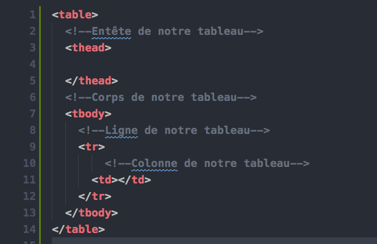

| Pense Bete html | ||||
|---|---|---|---|---|
| Balise | Description | Illustration | Cas spécifique | |
| "!DOCTYPE html" | En HTML, le doctype est le préambule "" requis en haut de tous les documents. |  |
Pour plus d'information suivez ce lien | |
| html | C'est la balise principale de notre page html | <html> votre contenu ici </html> | Pour plus d'information suivez ce lien | |
| "head" | le head est un dispositif exécutant la lecture, l'écriture ou l'éffacement de données sur un support de mémorisation par exemple des bandes ou des disques" | <head> votre contenu ici </head> | Comme tous les éléments HTML,il prend en charge les attributs universels (accesskey,autocapitalize...).Pour plus d'information suivez ce lien | |
| "meta" | Generalement invisibles dans le navigateur de l'internaute et situe dans la partie Head du code source d'une page,elle fournie des information au sujet de la page en question. | <meta/> | Pour plus d'information suivez ce lien | |
| "link" | L'élément HTML définit la relation entre le document courant et une ressource externe. Cet élément peut être utilisé pour définir un lien vers une feuille de style, vers les icônes utilisées en barre de titre ou comme icône d'application sur les appareils mobiles. | <link/> | Pour plus d'information suivez ce lien | |
| "title" | title est une balise du codage HTML qui permet de donner un titre à une page web. Ce titre se retrouve dans la barre de titre du navigateur mais également dans les pages de résultats des moteurs de recherche (SERP) | <title> votre title ici </title> | Pour plus d'information suivez ce lien | |
| "address" | indique des informations de contact pour une personne, un groupe de personnes ou une organisation. | <address> <a> votre email </a> <a> votre gsm </a> </adress> | Pour plus d'information suivez ce lien | |
| "dfn" | L'élément HTML "dfn" est utilisé afin d'indiquer le terme qui est en train d'être défini dans une phrase ou un paragraphe (sa définition est écrite dans son parent "p" ou "dt" "dd>"ou "section" le plus proche). | <dfn> votre email </dfn> | Pour plus d'information suivez ce lien | |
| "code" | L'élément HTML"code"représente un fragment de code machine. Par défaut, l'agent utilisateur utilise une police à chasse fixe (monospace) afin d'afficher le texte contenu dans cet élément. | <code> votre code ici </code> | Pour plus d'information suivez ce lien | |
| "kbd" | L'élément HTML"kbd"représente une plage de texte en ligne indiquant la saisie de texte par l'utilisateur à partir d'un clavier, d'une saisie vocale ou de tout autre dispositif de saisie de texte. | <kbd> Vos mot clé ici </kbd> | Pour plus d'information suivez ce lien | |
| "var" | L'élément HTML "var"représente une variable dans une expression mathématique ou un texte lié à la programmation. Son contenu est généralement représenté avec une version italique de la police environnante utilisée, toutefois, ce comportement peut dépendre du navigateur utilisé. | <var> Votre varible ici </var> | Pour plus d'information suivez ce lien | |
| "ins" | L'élément HTML "ins" représente un fragment de texte qui a été ajouté dans un document. | <ins> Votre fragment de text </ins> | L'élément "ins" est quant à lui utilisé pour représenter des portions de texte ajoutées ,pour plus d'information suivez ce lien | |
| "del" | L'élément HTML "del" représente une portion de texte ayant été supprimée d'un document. Cet élément est souvent (mais pas nécessairement) affiché rayé. | Pour plus d'information suivez ce lien | ||
| "b" | L'élément "b" permet d'attirer l'attention du lecteur sur le contenu d'un élément sans que ce contenu revêt une importance particulière. Anciennement utilisé pour mettre le texte en gras. | <b> Put your text in bold </b> | Pour plus d'information suivez ce lien | |
| "strong" | Il indique que le texte a une importance particulière ou un certain sérieux voire un caractère urgent. Cela se traduit généralement par un affichage en gras. | <strong> Put your text in bold </strong> | Pour plus d'information suivez ce lien | |
| "u" | L'élément HTML "u" permet d'afficher un fragment de texte qui est annoté avec des éléments non textuels. Par défaut, le contenu de l'élément est souligné. | <u> Your text </u> | Par exemple marquer un texte comme étant un nom propre chinois, ou pour marquer un texte qui a été mal orthographié,pour plus d'information suivez ce lien | |
| "i" | L'élément HTML "i" représente un morceau de texte qui se différencie du texte principal. | <i> put your text in italic </i> | Comme exemple,pour des termes techniques, des phrases dans une langue étrangère ou encore l'expression des pensées d'un personnage. Le contenu de cet élément est généralement affiché en italique.Pour plus d'information suivez ce lien | |
| "em" | La balise em (pour emphase) est utilisé afin de marquer un texte sur lequel on veut insister. Les éléments "em" peuvent être imbriqués, chaque degré d'imbrication indiquant un degré d'insistance plus élevé. | <em> put your text </em> | Il est souvent utilisé pour indiquer un contraste, implicite ou explicite.Pour plus d'information suivez ce lien | |
| "mark" | Il représente un texte marqué ou surligné à cause de sa pertinence dans le contexte. | <mark> put your text </mark> | Par exemple il peut être utilisé afin d'indiquer les correspondances d'un mot-clé recherché au sein d'un document.Pour plus d'information suivez ce lien | |
| "small" | Il permet de représenter des commentaires ou des textes à écrire en petits caractères (des termes d'un contrat, des mentions relatives au droit d'auteur, etc.) quelle que soit la présentation. | <small> put your text </small> | Pour plus d'information suivez ce lien | |
| "sub" | est utilisé, pour des raisons typographiques, afin d'afficher du texte souscrit (ou en indice) (plus bas et généralement plus petit) par rapport au bloc de texte environnant. | <sub> put your text </sub> | L'élément "sub"devrait uniquement être utilisé à des fins typographiques (afin de modifier la position du texte en raison des conventions typographiques) et non pour obtenir des effets de mise en forme. Ainsi, on n'utilisera pas "sub" pour restituer l'effet visuel d'un logo mais plutôt la propriété CSS vertical-align avec la valeur sub).Pour plus d'information suivez ce lien | |
| "sup" | est utilisé, pour des raisons typographiques, afin d'afficher du texte en exposant (plus haut et généralement plus petit) par rapport au bloc de texte environnant. | <sup> put your text </sup> | Cet élément devrait uniquement être utilisé pour des raisons typographiques lorsque la position du texte est liée à la signification de ce texte (par exemple pour une formule mathématiques) ou aux règles typographiques (par exemple en français pour Mlle, Mme ou Cie).lien | |
| "ol" | Il est la représentqtion d'une liste ordonnée. Les éléments d'une telle liste sont généralement affichés avec un indicateur ordinal pouvant prendre la forme de nombres, de lettres, de chiffres romains ou de points. | <ol> put your text </ol> | L' éléments "ol" représent une liste d'objets,toujours placé dans l'ordre qui est très important lien | |
| "ul" | Représentation d'une liste d'éléments sans ordre particulier. Il est souvent représenté par une liste à puces. | <ol> put your text </ol> | Cet attribut permet de définir le style de puce utilisé pour la liste. Les valeurs définies au sein des spécifications pour HTML3.2 et HTML 4.0/4.01 sont :circle,disc,and square.lien | |
| "li" | Il est utilisé pour représenter un élément dans une liste. Il doit être contenu dans un élément parent,soit d'une liste (ol),(ul) ou(menu). | <li> your item </li> | Par exemple au cours de la création d'une liste avec la balise ol nous pouvons observer les differents titres (li-premier article, li-deuxième article...)sur chaques lignes. lien | |
| dl | Il représente une liste de descriptions sous la forme d'une liste de paires associant des termes (fournis par des éléments "dt") et leurs descriptions ou définitions (fournies par des éléments "dd"). | <dl> your text </dl> | Nous pouvons utiliser cet élement pour implémenter un glossaire.pour plus d'informqtion suivre le lien lien | |
| "dt" | Il permet d'identifier un terme dans une liste de définitions ou de descriptions. Cet élément n'apparaît qu'en tant qu'élément enfant d'un élément 'dl'et est généralement suivi d'un élément 'dd'. | <dt> your code </dt> | pour plus d'information suivez ce lien lien | |
| "dd" | La balise "bb" est utilisé pour definition description . | <dd> your description </dd> | Prenant en compte les attributs universels,Il indique la définition d'un terme au sein d'une liste de définitions (élément (dl).lien | |
| "table" | <table> table item </table> |  | ||
| "details" | a balise details définit les détails supplémentaires que l’utilisateur peut afficher ou masquer à la demande. |
L'attribut open indiquez que les détails (tous ce qui entre les balises details ) doit être visibles
(open) par vos visiteurs <details> contenu ici </details> |
Pour plus d'information suivez ce lien | |
| article | L'élément HTML article représente du contenu autonome dans un document, une page, une application, ou un site. Ceci peut être un message sur un forum, un article de journal ou de magazine, une parution sur un blog, un commentaire d'utilisateur, un widget ou gadget interactif, ou tout autre élément de contenu indépendant | <article> your code </article> | Pour plus d'information suivez ce lien | "summary" | L'élément HTML summary représente une boîte permettant de révéler le contenu d'un résumé ou d'une légende pour le contenu d'un élément details . En cliquant sur l'élément summary> , on passe de l'état affiché à l'état masqué (et vice versa) de l'élément details parent. | <summary> </summary> | Pour plus d'information suivez ce lien |
| "td" | Indique permet de delimiter le corps d'un table. A l'intérieur de cette balise nous allons mettre le contenu d'une case du tableau. | <td> </td> | Pour plus d'information suivez ce lien | |
| "tfoot" | L'élément HTML tfoot permet de définir un ensemble de lignes qui résument les colonnes d'un tableau. | <tfoot> your code </tfoot> | Pour plus d'information suivez ce lien | |
| "th" | L'élément HTML th définit une cellule d'un tableau comme une cellule d'en-tête pour un groupe de cellule. La nature de ce groupe est définie grâce aux attributs scope et headers. | <th> your code </th> | Pour plus d'information suivez ce lien | |
| "thead" | L'élément thead définit un ensemble de lignes qui définit l'en-tête des colonnes d'un tableau. | <thead> your code </thead> | Pour plus d'information suivez ce lien interne | |
| "tr" | Il définit une ligne de cellules dans un tableau. Une ligne peut être constituée d'éléments "td" (les données des cellules) et "th"(les cellules d'en-têtes) | <tr> your code </tr> | Pour plus d'information suivez ce lien interne | |
| "tbody" | Indique permet de delimiter le corps d'un table. A l'intérieur de cette balise nous allons indiquer les différentes ligne de notre tableau et leur colonne. | <tbody> your code </tbody> | Pour plus d'information suivez ce lien interne | |
| "menu" | représente un groupe de commandes que l'utilisateur peut utiliser ou activer. Il peut être utilisé afin de créer des menus (affichés en haut d'un écran par exemple) et des menus contextuels (qui apparaissent au clic-droit ou après avoir cliqué sur un bouton). | <menu> your code </menu> | Pour plus d'information suivez ce lien interne | |
| "nav" | Représente une section d'une page ayant des liens vers d'autres pages ou des fragments de cette page. Autrement dit, c'est une section destinée à la navigation dans un document (avec des menus, des tables des matières, des index, etc.). | <nav> your code </nav> | Pour plus d'information suivez ce lien interne | |
| "div" | est un conteneur générique qui permet d'organiser le contenu sans représenter rien de particulier. | <div> your code </div> | Pour plus d'information suivez ce lien interne | |
| "span" | Est un conteneur générique en ligne (inline) pour les contenus phrasés. Il ne représente rien de particulier. | <span> your code </span> | Pour plus d'information suivez ce lien interne | |
| "h1 - h6" | Représentent six niveaux de titres dans un document. | <h6> your code </h6> | Pour plus d'information suivez ce lien interne | |
| "p" | Représente un paragraphe de texte. Les paragraphes sont généralement représentés comme des blocs et séparés par un espace vertical, leur première ligne est également parfois indentée. | <p> your code </p> | Pour plus d'information suivez ce lien interne | |
| "br" | Crée un saut de ligne (un retour chariot) dans le texte. | <br> | Pour plus d'information suivez ce lien interne | |
| "hr" | Représente un changement thématique entre des éléments de paragraphe (par exemple, un changement de décor dans un récit, un changement de sujet au sein d'une section).. | <hr> | Pour plus d'information suivez ce lien interne | |
| "blockquote" | Qui signifie bloc de citation indique que le texte contenu dans l'élément est une citation longue. | <blockquote> </blockquote> | Pour plus d'information suivez ce lien interne | |
| "q" | Indique que le texte qu'il contient est une citation en incise. | <q> </q> | Pour plus d'information suivez ce lien interne | |